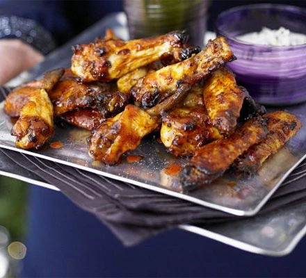

Baked buffalo chicken wings
Sticky spiced wings make great finger food or canapés, and this version skips the deep-fried stage so they're
healthier

Ingredients
- 3 garlic cloves, crushed
- 2 tbsp olive oil
- 3 tbsp cider vinegar
- 1 tbsp paprika
-
1 tbsp Worcestershire sauce
- 2 tsp celery salt
- 4 tbsp pepper sauce (we used Frank's hot sauce)
- 3 tbsp honey
- 1 ½kg chicken wings, halved at the joint
Steps
- In a large bowl, mix together the garlic, olive oil, cider vinegar, paprika, Worcestershire sauce, celery
salt, hot sauce, honey and a couple of cracks of black pepper. Add the chicken wings and toss around to make
sure they’re fully covered in the marinade. If you have time, leave the wings to marinate for a couple of
hrs in the fridge or ideally overnight.
- Heat oven to 180C/160C fan/gas 4. Drain and reserve the marinade, then spread the wings out on a very large
baking tray. Bake for 30 mins, then pour off the excess oil, add the reserved marinade and toss well.
Increase oven to 200C/180C fan/ gas 6. Return to the oven and cook for a further 30 mins, tossing a few
times to coat in the glaze as they cook. They should be sticky and glazed with most of the marinade
evaporated. Serve on a large platter alongside other party snacks.